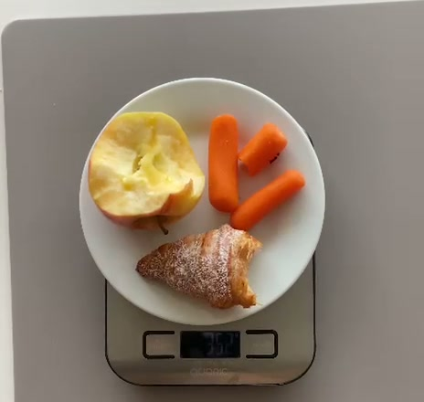
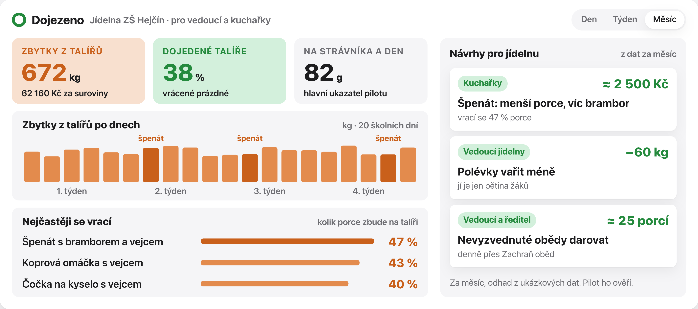

Víme, co děti v jídelně nedojí.
A pomůžeme, aby se méně vyhazovalo.
Kamera nad pásem s nádobím řekne co na talíři zbylo, váha pod kbelíkem kolik. Jídelna dostane přehled a konkrétní návrhy, co upravit. První pilot: naše škola v Olomouci-Hejčíně, leden 2027.
Prezentace a demodojezeno.netlify.app
Třetina uvařeného jídla ve školních jídelnách končí v koši.
Relevance a udržitelnost31%
uvařeného jídla se vyhodí (talíře a nevydané porce)
600 000Kč
ročně jen ze zbytků na talířích u školy s 500 žáky, a to jen suroviny
8 891
školních jídelen v ČR, denně vaří pro 1,6 milionu dětí
−30%
cíl pilotu (odhad): 180 000 Kč ročně pro školu s 500 žáky
Měříme talíře: tuhle část jde ovlivnit porcemi a recepty. Je to gastroodpad (maso, omáčky, tuky), který odváží specializovaná firma. Dnes ho jídelny neměří.
Jak to funguje
Srozumitelnost
352 g- 1Kamera nad pásemvyfotí talíř: co zbylo
- 2Váha pod kbelíkem352 g − talíř 200 g = 152 g
- 3AI pozná složkyjablko ≈ 84 g, mrkev ≈ 42 g, croissant ≈ 26 g
Skutečný záznam z 1. 11. 2026 ve Spaces, analýza Claude Opus 5.5. V pilotu kamera Raspberry Pi nad pásem a USB váha. Kuchařky nedělají nic navíc.
Co jídelna dostane: přehled a návrhy
Výstup pilotu
Přehled s ukázkovými daty: kolik se vyhodí, co se vrací a návrhy pro kuchařky i vedoucí, třeba menší porce špenátu (vrací se 47 %).
Komunita
ZapojeníData pro jídelnu, zpětná vazba pro děti: grafy před a po na webu školy a na obrazovce v jídelně, soutěž tříd.
Jídelna v Hejčíně: už jsme volali, líbí se jim to.
80 kg → 19 kg
Brno: odpad v den, kdy děti vážily samyKonkurence
RelevanceVe světě to funguje: IKEA Česko snížila odpad o polovinu. Míří ale na hotely, restaurace a catering.
Ve školních jídelnách v ČR jsme automatické měření nenašli.
Jsme jiní: levná kamera a váha · jsme tady · víme co, ne jen kolik.
Pilot u nás v Hejčíně: 1 jídelna, 6 týdnů, 34 000 Kč
Realizovatelnostsouhlas ředitele, hygiena a GDPR, instalace
2 týdny měřit → upravit porce → měřit znovu
další kola, dokud zbytky klesají
výsledky pilotu
zpráva, další jídelna, Praha
34 000 Kč
vše z Hack Prague · ceny z e-shopů, zbytek odhadHlavní KPI: gastroodpad z talířů na strávníka a den. Aktéři: vedoucí jídelny a kuchařky · žáci a učitelé · ředitel · rodiče · městská část jako budoucí plátce.
Jídelna odmítne: pilot zdarma, žádná práce navíc, data patří jídelně, souhlas ředitele předem.
Hygiena a GDPR: kamera jen na pás, žádné obličeje, zařízení mimo přípravu jídla.
Rychlý výdej: talíř k váze podle pořadí, při nejistotě společná dávka. Celková váha sedí vždy.
Hlad: ubíráme jen to, co se nejí, přídavek na požádání.
Tým
TTobiasresearch a data, mentoři
OOndřejtechnika, prototyp, demo, prezentace
Jak jsme pracovali
Provázanost s AkademiíNástroje z Akademie: mapa aktérůharmonogrammatice rizikrozpočetKPI
Po mentoringu jsme změnili: fotíme talíř, ne jen kbelík · jeden pás místo tří · gastroodpad, ne bioodpad · pilot na 6 týdnů (měřit, upravit, měřit znovu).
Zdroje: Prague Food Waste, tisková zpráva 25. 6. 2024 (31 %, 48/43/9 %, 600 000 Kč, 5–9 %) · Mendelova univerzita: Jak šetřit jídlem ve školních jídelnách, 2025 (8 891 jídelen a 1,6 mil. dětí s. 5, Brno s. 19, polévka s. 10) · Echo24 a Blesk, 6/2024 (špenát 190 g z porce 400 g = 47 %) · IKEA Česko 2022 (−54 %). Odhady (−30 %, 180 000 Kč) a přehled s ukázkovými daty jsou náš výpočet. Všechny zdroje: příloha prezentace „Odkud máme čísla“.